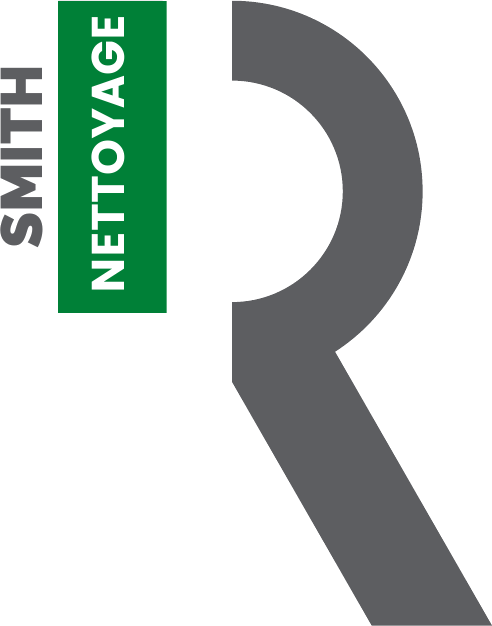

ENTRETIEN &
MULTI-SITES
Bureaux, sièges, commerces, parties communes et sites logistiques.

Demander une visite ↗SMITH RÉSEAU NETTOYAGE — B2B
Entretien professionnel, multi-sites, vitrerie, remises en état et interventions spécialisées. Une exécution terrain suivie, contrôlée et documentée.
LA DIFFÉRENCE SRN
VOUS DEVRIEZ POUVOIR LE VÉRIFIER.
SRN CONTROL
Le suivi n’est pas un décor. Il sert à savoir qui est passé, ce qui a été contrôlé et quelles preuves restent disponibles.

NOS SOLUTIONS
Bureaux, sièges, commerces, parties communes et sites logistiques.
Après travaux, déménagement, sinistre et remise à niveau technique.
Surfaces vitrées, grandes baies, mécanisation et robotisation ciblée.
Autolaveuse, monobrosse, parkings, entrepôts et grandes surfaces.
TECHNOLOGIE TERRAIN
La mécanisation et la robotisation ne remplacent pas le savoir-faire : elles renforcent la sécurité, la régularité et la productivité lorsque le contexte le permet.
MÉTHODE SRN
Une intervention identifiable, datée et rattachée au bon site.
Points de contrôle, observations et actions correctives restent liés à l’intervention.
Photos, compte rendu et historique facilitent validation, suivi et facturation.
ILS NOUS FONT CONFIANCE
Un aperçu des entreprises et groupes pour lesquels les équipes SRN interviennent ou ont réalisé des prestations.
VOTRE PROCHAIN SITE
Un parcours court pour qualifier le besoin avant la visite technique ou la proposition commerciale.